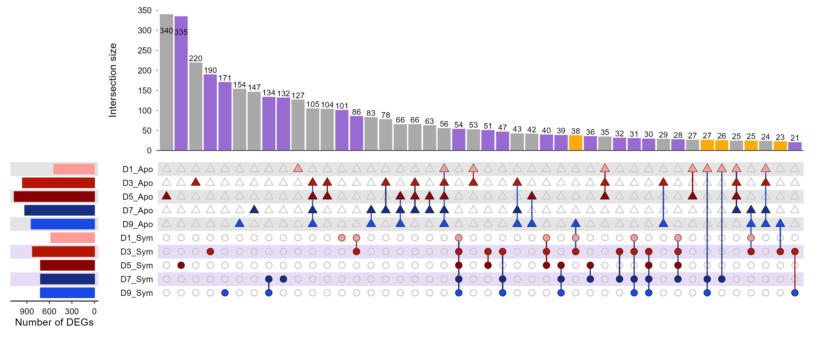

参数要点
| 参数 | 默认 | 说明 |
|---|---|---|
min_size |
1 | 交集小于此值的组合不显示 |
top_n |
20 | 最多画多少个交集 |
sort_by |
freq |
freq 按交集大小、degree 按集合数分组 |
plot55 · 代码 4 · 图 8 · 笔记 1 · 代码库专题
长表或集合成员矩阵：每行一个元素，每列一个集合（0/1 或 TRUE/FALSE）。

ComplexUpset plotComplexUpset_plot/ComplexUpset_plot.png
共 5 张：点缩略图切换主图，下载按钮跟随当前主图。
图源：ComplexUpset_plot.png
从专题 README 抽取；原文顺序保留，未跑过的部分照实标注。
当集合数超过 4 个，韦恩图会糊成一团；UpSet 用「交集大小柱状图 + 集合成员矩阵」替代。
| 参数 | 默认 | 说明 |
|---|---|---|
min_size |
1 | 交集小于此值的组合不显示 |
top_n |
20 | 最多画多少个交集 |
sort_by |
freq |
freq 按交集大小、degree 按集合数分组 |
长表或集合成员矩阵：每行一个元素，每列一个集合（0/1 或 TRUE/FALSE）。
gene,SetA,SetB,SetC
TP53,1,1,0
BRCA1,0,1,1render_plot method_id="plot55"
arguments: {"csv_path": "your.csv", "set_columns": ["SetA","SetB","SetC"]}upset() 返回 patchwork 对象，+ theme() 会污染所有子图（实测把左侧「Set size」轴标题挤没），patchwork::plot_annotation(title=, theme=)。ComplexUpset 会静默丢弃全 0 的集合，导致矩阵行数少于 set_columns、图和参数对不上。ComplexUpset 不在 CRAN，需 remotes::install_github("krassowski/complex-upset")。MsTt模板/251105_upset_plot/（ComplexUpset 与 UpSetR 两版原稿）。
4 个源码文件，按目录顺序；本机绝对路径已替换为 ~。 代码可复制，但需要按自己的数据改路径与参数。
######################
# 公众号：MsTt笔记 #
######################
# 加载必要的包
library(ComplexUpset) # 用于绘制复杂Upset图
library(ggplot2) # 用于绘图和图形语法
library(readxl) # 用于读取Excel文件
# 读入数据----------------------------------------------------------------------
data <- read_xlsx("data2.xlsx") # 多个比较组的差异分析结果
# 找到 log2FC 列和 padj 列
log2fc_cols <- grep("log2fc", colnames(data)) # 使用正则表达式查找包含"log2fc"的列名
padj_cols <- grep("padj", colnames(data)) # 使用正则表达式查找包含"padj"的列名
# 判断每个基因在任意时间点是否为差异表达，并创建逻辑矩阵
is_DEG <- apply(data, 1, function(row) {
# 对每一行数据，检查是否存在至少一个时间点满足：|log2FC| > 0.5 且 padj < 0.05
any(abs(as.numeric(row[log2fc_cols])) > 0.5 & as.numeric(row[padj_cols]) < 0.05)
})
# 筛选差异基因：从原始数据中提取被识别为差异表达基因的行
DEG_df <- data[is_DEG, ]
# 对差异基因进行分类：根据log2FC值模式将基因分为三类：
# 如果所有log2FC值都≥0，或者虽有负值但都不小于-0.5，分类为"Apo共生昆虫上调"
# 如果所有log2FC值都≤0，或者虽有正值但都不大于0.5，分类为"Sym共生昆虫上调"
# 其他情况分类为"混合表达"
log2fc_cols <- grep("log2fc", colnames(DEG_df))
DEG_df$Expression <- apply(DEG_df[, log2fc_cols], 1, function(x) {
x <- as.numeric(x)
if(all(x >= 0) || (any(x < 0) && all(x >= -0.5))) {
return("Up-regulated in Apoymbiotic Insects")
} else if(all(x <= 0) || (any(x > 0) && all(x <= 0.5))) {
return("Up-regulated in Symbiotic Insects")
} else {
return("Mixed expression")
}
})
# 将数据转成upset需要的0/1格式--------------------------------------------------
# 创建Apo方向的二元矩阵：log2FC > 0.5的位置标记为1，否则为0
Apo_mat <- as.data.frame(
lapply(DEG_df[, log2fc_cols], function(x) as.integer(as.numeric(x) > 0.5))
)
# 创建Sym方向的二元矩阵：log2FC < -0.5的位置标记为1，否则为0
Sym_mat <- as.data.frame(
lapply(DEG_df[, log2fc_cols], function(x) as.integer(as.numeric(x) < -0.5))
)
# 重命名列：将列名中的".log2fc"替换为组名后缀
colnames(Apo_mat) <- gsub("\\.log2fc", "_Apo", colnames(DEG_df)[log2fc_cols])
colnames(Sym_mat) <- gsub("\\.log2fc", "_Sym", colnames(DEG_df)[log2fc_cols])
# 合并两个矩阵：将GeneID、Apo矩阵、Sym矩阵和表达分类合并为一个数据框
binary_mat <- cbind(DEG_df$GeneID, Apo_mat, Sym_mat, Expression = DEG_df$Expression)
colnames(binary_mat)[1] <- "GeneID" # 重命名第一列为GeneID
# 将表达方向设为因子：明确指定因子水平顺序以确保绘图时的一致性
binary_mat$Expression <- factor(binary_mat$Expression,
levels = c("Up-regulated in Apoymbiotic Insects",
"Up-regulated in Symbiotic Insects",
"Mixed expression"))
# 设置绘图顺序：定义集合在Upset图中的显示顺序
set_cols <- c("D9_Sym","D7_Sym","D5_Sym","D3_Sym","D1_Sym",
"D9_Apo","D7_Apo","D5_Apo","D3_Apo","D1_Apo")
# 绘图 -------------------------------------------------------------------------
# 基础Upset图
upset(
binary_mat,
intersect = set_cols, # 指定用于构建交集的集合（列）
name = NULL, # 图例标题设为NULL，表示不显示
height_ratio = 1, # 图形高度比例
width_ratio = 0.12, # 图形宽度比例
min_size = 21, # 交集包含的最小观测数，小于此值的交集将被排除
keep_empty_groups = TRUE, # 是否保留空集合（包括经过大小筛选后为空的集合）
sort_sets = FALSE # 是否对集合矩阵中的行进行排序，选FALSE才会按照前面指定的顺序排列集合
)
# 完整Upset图：包含所有自定义样式和注释
upset(
binary_mat,
intersect = set_cols,
name = NULL,
height_ratio = 1,
width_ratio = 0.12,
min_size = 21,
keep_empty_groups = TRUE,
sort_sets = FALSE,
# 设置下方矩阵行的背景色：交替色背景增强可读性
stripes=c('white','#e7dcf5','white','#e7dcf5','white', # Sym组：白紫交替
'#e4e4e4','white','#e4e4e4','white','#e4e4e4'), # Apo组：白灰交替
# 定义上方条形图的样式：交集大小柱状图
base_annotations = list(
'Intersection size' = intersection_size(
counts = TRUE, # 显示交集大小的数值
text=list(color = 'black', size = 3), # 数值的文本颜色和大小
mapping = aes(fill = Expression), # 柱子的填充颜色：根据Expression列填充颜色
) +
scale_fill_manual(values = c( # 柱子的填充颜色的映射关系
"Up-regulated in Apoymbiotic Insects" = "#a9a9a9",
"Up-regulated in Symbiotic Insects" = "#986bd3",
"Mixed expression" = "#feac03"
)) +
scale_y_continuous(limits = c(0, 350), # 设置Y轴范围
breaks = seq(0, 350, 50), # 设置Y轴刻度
expand = c(0, 0)) # 移除轴扩展
),
# 定义左侧条形图的样式：显示每个集合的基因数量
set_sizes = upset_set_size(
geom = geom_bar(width = 0.7)) + # 使用柱状图，并设置宽度
ylab("Number of DEGs"), # 设置Y轴标签名
# 定义下方矩阵点图：显示基因在各集合中的存在情况
matrix = intersection_matrix(
geom = geom_point(
# 根据分组设置不同的形状：Sym用圆形(21)，Apo用菱形(24)
aes(shape = after_scale(ifelse(y %in% c(1,2,3,4,5), 21, 24))),
size = 2.5) # 设置点的大小
),
# 定义queries：为每个集合指定颜色
queries = list(
# Apo组的颜色设置：从浅红到深蓝的渐变
upset_query(set = 'D1_Apo', color = '#ff9c98', fill = '#ff9c98'),
upset_query(set = 'D3_Apo', color = '#b41600', fill = '#b41600'),
upset_query(set = 'D5_Apo', color = '#8a0001', fill = '#8a0001'),
upset_query(set = 'D7_Apo', color = '#182d80', fill = '#182d80'),
upset_query(set = 'D9_Apo', color = '#1949e4', fill = '#1949e4'),
# Sym组的颜色设置：使用与Apo组相同的颜色方案
upset_query(set = 'D1_Sym', color = '#ff9c98', fill = '#ff9c98'),
upset_query(set = 'D3_Sym', color = '#b41600', fill = '#b41600'),
upset_query(set = 'D5_Sym', color = '#8a0001', fill = '#8a0001'),
upset_query(set = 'D7_Sym', color = '#182d80', fill = '#182d80'),
upset_query(set = 'D9_Sym', color = '#1949e4', fill = '#1949e4')
),
# 设置主题：自定义各个小图的样式
themes = upset_modify_themes(
list(
# 上方条形图
'Intersection size' = theme(
panel.grid.major = element_blank(), # 移除主要网格线
panel.grid.minor = element_blank(), # 移除次要网格线
axis.ticks.length.y = unit(0.05, "cm"), # 设置Y轴刻度长度
axis.ticks.y = element_line(color = "grey23", linewidth = 0.4), # Y轴刻度样式
axis.line.x = element_line(color = "grey23", linewidth = 0.4), # X轴线样式
axis.title.y = element_text(size = 11), # Y轴标题样式
axis.text.y =element_text(size = 9, color = "black"), # Y轴文本样式
legend.position = "none" # 移除图例
),
# 左侧条形图
'overall_sizes' = theme(
panel.grid.major = element_blank(), # 移除主要网格线
panel.grid.minor = element_blank(), # 移除次要网格线
axis.ticks.x = element_line(color = "grey23"), # X轴刻度样式
axis.line.x = element_line(color = "grey23", linewidth = 0.6), # X轴线样式
axis.text.x = element_text(size = 9, color="black"), # X轴文本样式
axis.title.x = element_text(size = 11) # X轴标题样式
),
# 下方矩阵点图
'intersections_matrix' = theme(
panel.grid.major = element_blank(), # 移除主要网格线
panel.grid.minor = element_blank(), # 移除次要网格线
axis.text.y = element_text(size = 9, color = "black") # Y轴文本样式
)
)
)
)
# 保存图形
ggsave("ComplexUpset_plot.pdf", width = 12, height = 5)
ggsave("ComplexUpset_plot.png", width = 12, height = 5)
######################
# 公众号：MsTt笔记 #
######################
# 加载必要的包
library(VennDiagram)
library(dplyr)
# 分组提取基因集合：假设已经准备好DEG_df（见upset部分）
Up_Sym <- DEG_df %>%
filter(Expression != "Up-regulated in Apoymbiotic Insects") %>%
pull(GeneID)
Up_Apo <- DEG_df %>%
filter(Expression != "Up-regulated in Symbiotic Insects") %>%
pull(GeneID)
# 绘制Venn图
venn.plot <- venn.diagram(
x = list(Apoymbiotic = Up_Apo, Symbiotic = Up_Sym),
filename = NULL, # 不保存文件，直接绘制
scaled = FALSE, # 是否根据比例显示大小
category.names = c("Up-regulation in\nApoymbiotic",
"Up-regulation\nin Symbiotic"),
fill = c("#a9a9a9", "#986bd3"), # 圈的内部填充颜色
alpha = 1, # 圈的内部填充颜色的透明度
col = "black", # 圈的外部边框线的颜色
lwd = 3, # 圈的外部边框线的粗细
lty = 1, # 圈的外部边框线的类型，1为直线
label.col = "white", # 圆内数字的字体颜色
cex = 1.8, # 圈内数字的字体大小
fontfamily = "ArialMT", # 圆内数字的字体
cat.col = c("#444444", "#953df8" ), # 外圈类别标签的颜色
cat.cex = 1.8, # 外圈类别标签的字体大小
cat.fontfamily = "ArialMT", # 外圈类别标签的字体
cat.dist = 0.15, # 圈的半径
cat.pos = c(45, -145), # 调整标签位置,顺时钟360度
rotation.degree = -90, # 整体旋转 90°
margin = 0.1, # 边距
imagetype = "pdf"
)
# 显示图形
grid::grid.newpage()
grid::grid.draw(venn.plot)
# 打开 pdf 设备并写入
pdf("Venn_plot.pdf", width = 5, height = 5)
grid::grid.newpage()
grid::grid.draw(venn.plot)
dev.off() # 关闭PDF设备，保存输出
# 打开 png 设备并写入
png("Venn_plot.png", width = 500, height = 500)
grid::grid.newpage()
grid::grid.draw(venn.plot)
dev.off() # 关闭PDF设备，保存输出
# 加载必要的包
library(UpSetR) # 用于绘制UpSet图
library(ggplot2) # 用于图形绘制（UpSetR部分依赖）
library(readxl) # 用于读取Excel文件
library(tibble) # 提供 column_to_rownames() 等数据框转换函数
# 读入数据
data_mat <- read_excel("data1.xlsx") # 0/1型数据
data_mat <- column_to_rownames(data_mat, var = colnames(data_mat)[1]) # 第一列作为行名
# 绘制基础 upset 图-------------------------------------------------------------
upset(
data_mat, nintersects = 25, # 显示前25个交集
sets = names(data_mat), # 使用全部集合
keep.order = TRUE, # 这里是True：代表左侧集合条形的顺序，会与表格中列的顺序相同
matrix.dot.alpha = 0.5, # 矩阵中点的透明度
point.size = 3, # 矩阵中点的大小
line.size = 0.7, # 矩阵中点连线的粗细
mb.ratio = c(0.55, 0.45), # 上方条形图与下方矩阵图的比例
mainbar.y.label = "Intersection size", # 上方条形图Y轴标签
sets.x.label = "Set size", # 左侧条形图X轴标签
text.scale = c(1.8,1.4,1.5,1.4,1.4,1.5), # 各文字元素字体大小（依次为：主Y轴标题、主Y轴刻度、X轴标题、X轴刻度、集合名称、条形数字）
order.by = "freq" # 按交集频数排序
)
# 基于 metadata 美化基础 upset 图-----------------------------------------------
# 定义集合颜色映射
set_colors <- corrplot::COL2('RdBu', 15)[c(4:7, 9:12)] # 选择 RdBu 颜色梯度中的部分颜色
names(set_colors) <- colnames(data_mat) # 给颜色命名以对应集合名
# 设置集合的元信息 metadata
meta_info <- data.frame(
sets = colnames(data_mat), # 每个集合名称
Group = colnames(data_mat) # 使用集合名本身作为分组依据
)
# 定义集合注释样式（行注释）
set_meta <- list(
data = meta_info, # 数据来源
plots = list(
list(
type = "matrix_rows", # 在矩阵行显示注释
column = "Group", # 颜色按“Group”列映射
colors = set_colors, # 每个Group对应的颜色
alpha = 0.25 # 设置填充颜色的透明度
)
)
)
# 绘制 UpSet 图-样式1
upset(
data_mat, nintersects = 25, # 显示前25个交集
sets = names(data_mat), # 使用全部集合
keep.order = TRUE, # 这里是True：代表左侧集合条形的顺序，会与表格中列的顺序相同
set.metadata = set_meta, # 添加集合注释信息，这里控制矩阵背景颜色和点的颜色
sets.bar.color = set_colors, # 左侧集合条形的填充颜色
main.bar.color = "#4E9AC6", # 上方交集条形的填充颜色
queries = list( # 突出显示指定的交集
list(query = intersects, params = list("N+_vs_N0"), color= "#ae3336"),
list(query = intersects, params = list("StageIV_vs_StageIII"), color= "#ae3336"),
list(query = intersects, params = list("StageIV_vs_StageII"), color= "#ae3336"),
list(query = intersects, params = list("StageIV_vs_StageI"), color= "#ae3336"),
list(query = intersects, params = list("StageIII_vs_StageI"), color= "#ae3336"),
list(query = intersects, params = list("StageII_vs_StageI"), color= "#ae3336"),
list(query = intersects, params = list("Malignant_vs_Benign"), color= "#ae3336")
),
matrix.dot.alpha = 0.5, # 矩阵中点的透明度
point.size = 3, # 矩阵中点的大小
line.size = 0.7, # 矩阵中点连线的粗细
mb.ratio = c(0.55, 0.45), # 上方条形图与下方矩阵图的比例
mainbar.y.label = "Intersection size", # 上方条形图Y轴标签
sets.x.label = "Set size", # 左侧条形图X轴标签
text.scale = c(1.8,1.4,1.5,1.4,1.4,1.5), # 各文字元素字体大小（依次为：主Y轴标题、主Y轴刻度、X轴标题、X轴刻度、集合名称、条形数字）
order.by = "freq" # 按交集频数排序
)
# 进一步更改上方bar的颜色填充---------------------------------------------------
# 导入自定义函数（例如 myupset）
source("utils.R")
# 上方交集条形，先默认全部为蓝色
main_bar_colors <- rep("#4E9AC6", 40)
# 然后再将指定的索引位置，条形颜色修改为红色
main_bar_colors[c(2,3,4,6,10,11,12)] <- "#ae3336"
# 调用自定义函数myupset绘制图形
p <- myupset(
data_mat, nintersects = 25, # 显示前25个交集
sets = names(data_mat), # 使用全部集合
keep.order = TRUE, # 这里是True：代表左侧集合条形的顺序，会与表格中列的顺序相同
set.metadata = set_meta, # 添加集合注释信息，这里控制矩阵背景颜色和点的颜色
sets.bar.color = set_colors, # 左侧集合条形的填充颜色
main.bar.color = main_bar_colors, # 上方交集条形的填充颜色（与前面代码不同）
matrix.dot.alpha = 0.5, # 矩阵中点的透明度
point.size = 3, # 矩阵中点的大小
line.size = 0.7, # 矩阵中点连线的粗细
mb.ratio = c(0.55, 0.45), # 上方条形图与下方矩阵图的比例
mainbar.y.label = "Intersection size", # 上方条形图Y轴标签
sets.x.label = "Set size", # 左侧条形图X轴标签
text.scale = c(1.8,1.4,1.5,1.4,1.4,1.5), # 各文字元素字体大小（依次为：主Y轴标题、主Y轴刻度、X轴标题、X轴刻度、集合名称、条形数字）
order.by = "freq" # 按交集频数排序
)
# 显示图形
print(p)
# 输出最终定制版UpSet图到PDF
pdf("upsetR_plot.pdf", width = 13, height = 8, onefile = FALSE)
grid::grid.newpage() # 确保只绘制一页（避免叠图）
print(p)
dev.off() # 关闭PDF设备，保存输出Make_matrix_plot <- function(Mat_data,Set_size_data, Main_bar_data, point_size, line_size, text_scale, labels,
shading_data, shade_alpha){
if(length(text_scale) == 1){
name_size_scale <- text_scale
}
if(length(text_scale) > 1 && length(text_scale) <= 6){
name_size_scale <- text_scale[5]
}
Mat_data$line_col <- 'grey23'
print(Mat_data)
Matrix_plot <- (ggplot()
+ theme(panel.background = element_rect(fill = "white"),
plot.margin=unit(c(-0.2,0.5,0.5,0.5), "lines"),
axis.text.x = element_blank(),
axis.ticks.x = element_blank(),
axis.ticks.y = element_blank(),
axis.text.y = element_text(colour = "gray0",
size = 7*name_size_scale, hjust = 0.4),
panel.grid.major = element_blank(),
panel.grid.minor = element_blank())
+ xlab(NULL) + ylab(" ")
+ scale_y_continuous(breaks = c(1:nrow(Set_size_data)),
limits = c(0.5,(nrow(Set_size_data) +0.5)),
labels = labels, expand = c(0,0))
+ scale_x_continuous(limits = c(0,(nrow(Main_bar_data)+1 )), expand = c(0,0))
+ geom_rect(data = shading_data, aes_string(xmin = "min", xmax = "max",
ymin = "y_min", ymax = "y_max"),
fill = shading_data$shade_color, alpha = shade_alpha)
# 无连线的点 (value == 0)
+ geom_point(data = Mat_data[Mat_data$value == 0, ], aes_string(x= "x", y= "y"),
colour = Mat_data$color[Mat_data$value == 0], size = point_size,
shape = 16, alpha = Mat_data$alpha[Mat_data$value == 0])
+ geom_line(data= Mat_data, aes_string(group = "Intersection", x="x", y="y",
colour = "line_col"), size = line_size)
# 有连线的点 (value != 0)
+ geom_point(data = Mat_data[Mat_data$value != 0, ], aes_string(x= "x", y= "y"),
fill = Mat_data$color[Mat_data$value != 0], colour = "black",
size = point_size, shape = 21, alpha = Mat_data$alpha[Mat_data$value != 0])
+ scale_color_identity())
Matrix_plot <- ggplot_gtable(ggplot_build(Matrix_plot))
return(Matrix_plot)
}
## Default upset() arguments
myupset <- function(data, nsets = 5, nintersects = 40, sets = NULL, keep.order = F,
set.metadata = NULL, intersections = NULL, matrix.color = "gray23",
main.bar.color = "gray23", mainbar.y.label = "Intersection Size",
mainbar.y.max = NULL, sets.bar.color = "gray23", sets.x.label = "Set Size",
point.size = 2.2, line.size = 0.7, mb.ratio = c(0.7, 0.3),
expression = NULL, att.pos = NULL, att.color = main.bar.color,
order.by = c("freq", "degree"), decreasing = c(T, F), show.numbers = "yes",
number.angles = 0, group.by = "degree", cutoff = NULL, queries = NULL,
query.legend = "none", shade.color = "gray88", shade.alpha = 0.25,
matrix.dot.alpha = 0.5, empty.intersections = NULL, color.pal = 1,
boxplot.summary = NULL, attribute.plots = NULL, scale.intersections = "identity",
scale.sets = "identity", text.scale = 1, set_size.angles = 0,
set_size.show = FALSE, set_size.numbers_size = NULL, set_size.scale_max = NULL)
{
startend <- UpSetR:::FindStartEnd(data)
first.col <- startend[1]
last.col <- startend[2]
if(color.pal == 1){
palette <- c("#1F77B4", "#FF7F0E", "#2CA02C", "#D62728", "#9467BD", "#8C564B", "#E377C2",
"#7F7F7F", "#BCBD22", "#17BECF")
} else{
palette <- c("#E69F00", "#56B4E9", "#009E73", "#F0E442", "#0072B2", "#D55E00",
"#CC79A7")
}
if(is.null(intersections) == F){
Set_names <- unique((unlist(intersections)))
Sets_to_remove <- UpSetR:::Remove(data, first.col, last.col, Set_names)
New_data <- UpSetR:::Wanted(data, Sets_to_remove)
Num_of_set <- UpSetR:::Number_of_sets(Set_names)
if(keep.order == F){
Set_names <- UpSetR:::order_sets(New_data, Set_names)
}
All_Freqs <- UpSetR:::specific_intersections(data, first.col, last.col, intersections, order.by, group.by, decreasing,
cutoff, main.bar.color, Set_names)
} else if(is.null(intersections) == T){
Set_names <- sets
if(is.null(Set_names) == T || length(Set_names) == 0 ){
Set_names <- UpSetR:::FindMostFreq(data, first.col, last.col, nsets)
}
Sets_to_remove <- UpSetR:::Remove(data, first.col, last.col, Set_names)
New_data <- UpSetR:::Wanted(data, Sets_to_remove)
Num_of_set <- UpSetR:::Number_of_sets(Set_names)
if(keep.order == F){
Set_names <- UpSetR:::order_sets(New_data, Set_names)
}
All_Freqs <- UpSetR:::Counter(New_data, Num_of_set, first.col, Set_names, nintersects, main.bar.color,
order.by, group.by, cutoff, empty.intersections, decreasing)
}
Matrix_setup <- UpSetR:::Create_matrix(All_Freqs)
labels <- UpSetR:::Make_labels(Matrix_setup)
#Chose NA to represent NULL case as result of NA being inserted when at least one contained both x and y
#i.e. if one custom plot had both x and y, and others had only x, the y's for the other plots were NA
#if I decided to make the NULL case (all x and no y, or vice versa), there would have been alot more if/else statements
#NA can be indexed so that we still get the non NA y aesthetics on correct plot. NULL cant be indexed.
att.x <- c(); att.y <- c();
if(is.null(attribute.plots) == F){
for(i in seq_along(attribute.plots$plots)){
if(length(attribute.plots$plots[[i]]$x) != 0){
att.x[i] <- attribute.plots$plots[[i]]$x
}
else if(length(attribute.plots$plots[[i]]$x) == 0){
att.x[i] <- NA
}
if(length(attribute.plots$plots[[i]]$y) != 0){
att.y[i] <- attribute.plots$plots[[i]]$y
}
else if(length(attribute.plots$plots[[i]]$y) == 0){
att.y[i] <- NA
}
}
}
BoxPlots <- NULL
if(is.null(boxplot.summary) == F){
BoxData <- UpSetR:::IntersectionBoxPlot(All_Freqs, New_data, first.col, Set_names)
BoxPlots <- list()
for(i in seq_along(boxplot.summary)){
BoxPlots[[i]] <- UpSetR:::BoxPlotsPlot(BoxData, boxplot.summary[i], att.color)
}
}
customAttDat <- NULL
customQBar <- NULL
Intersection <- NULL
Element <- NULL
legend <- NULL
EBar_data <- NULL
if(is.null(queries) == F){
custom.queries <- UpSetR:::SeperateQueries(queries, 2, palette)
customDat <- UpSetR:::customQueries(New_data, custom.queries, Set_names)
legend <- UpSetR:::GuideGenerator(queries, palette)
legend <- UpSetR:::Make_legend(legend)
if(is.null(att.x) == F && is.null(customDat) == F){
customAttDat <- UpSetR:::CustomAttData(customDat, Set_names)
}
customQBar <- UpSetR:::customQueriesBar(customDat, Set_names, All_Freqs, custom.queries)
}
if(is.null(queries) == F){
Intersection <- UpSetR:::SeperateQueries(queries, 1, palette)
Matrix_col <- UpSetR:::intersects(UpSetR:::QuerieInterData, Intersection, New_data, first.col, Num_of_set,
All_Freqs, expression, Set_names, palette)
Element <- UpSetR:::SeperateQueries(queries, 1, palette)
EBar_data <-UpSetR:::ElemBarDat(Element, New_data, first.col, expression, Set_names,palette, All_Freqs)
} else{
Matrix_col <- NULL
}
Matrix_layout <- UpSetR:::Create_layout(Matrix_setup, matrix.color, Matrix_col, matrix.dot.alpha)
## our modification
for(i in 1:Num_of_set) {
j <- which(Matrix_layout$y == i & Matrix_layout$value == 1)
if(length(j) > 0) Matrix_layout$color[j] <- sets.bar.color[i]
}
## continuing with upset()
Set_sizes <- UpSetR:::FindSetFreqs(New_data, first.col, Num_of_set, Set_names, keep.order)
Bar_Q <- NULL
if(is.null(queries) == F){
Bar_Q <- UpSetR:::intersects(UpSetR:::QuerieInterBar, Intersection, New_data, first.col, Num_of_set, All_Freqs, expression, Set_names, palette)
}
QInter_att_data <- NULL
QElem_att_data <- NULL
if((is.null(queries) == F) & (is.null(att.x) == F)){
QInter_att_data <- UpSetR:::intersects(UpSetR:::QuerieInterAtt, Intersection, New_data, first.col, Num_of_set, att.x, att.y,
expression, Set_names, palette)
QElem_att_data <- UpSetR:::elements(UpSetR:::QuerieElemAtt, Element, New_data, first.col, expression, Set_names, att.x, att.y,
palette)
}
AllQueryData <- UpSetR:::combineQueriesData(QInter_att_data, QElem_att_data, customAttDat, att.x, att.y)
ShadingData <- NULL
if(is.null(set.metadata) == F){
ShadingData <- UpSetR:::get_shade_groups(set.metadata, Set_names, Matrix_layout, shade.alpha)
output <- UpSetR:::Make_set_metadata_plot(set.metadata, Set_names)
set.metadata.plots <- output[[1]]
set.metadata <- output[[2]]
if(is.null(ShadingData) == FALSE){
shade.alpha <- unique(ShadingData$alpha)
}
} else {
set.metadata.plots <- NULL
}
if(is.null(ShadingData) == TRUE){
ShadingData <- UpSetR:::MakeShading(Matrix_layout, shade.color)
}
Main_bar <- suppressMessages(UpSetR:::Make_main_bar(All_Freqs, Bar_Q, show.numbers, mb.ratio, customQBar, number.angles, EBar_data, mainbar.y.label,
mainbar.y.max, scale.intersections, text.scale, attribute.plots))
Matrix <- Make_matrix_plot(Matrix_layout, Set_sizes, All_Freqs, point.size, line.size,
text.scale, labels, ShadingData, shade.alpha)
Sizes <- UpSetR:::Make_size_plot(Set_sizes, sets.bar.color, mb.ratio,sets.x.label, scale.sets, text.scale, set_size.angles, set_size.show, set_size.scale_max, set_size.numbers_size)
structure(class = "upset",
.Data=list(
Main_bar = Main_bar,
Matrix = Matrix,
Sizes = Sizes,
labels = labels,
mb.ratio = mb.ratio,
att.x = att.x,
att.y = att.y,
New_data = New_data,
expression = expression,
att.pos = att.pos,
first.col = first.col,
att.color = att.color,
AllQueryData = AllQueryData,
attribute.plots = attribute.plots,
legend = legend,
query.legend = query.legend,
BoxPlots = BoxPlots,
Set_names = Set_names,
set.metadata = set.metadata,
set.metadata.plots = set.metadata.plots)
)
}
这个专题已经做成确定性工具，调用后直接返回图片， 不需要 AI 现写代码。